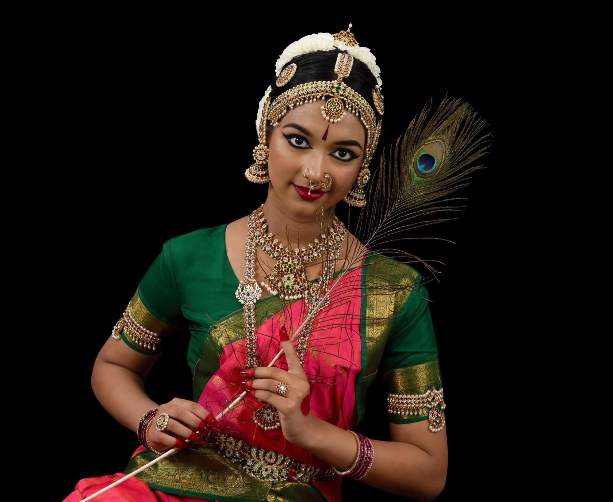

Anannya Karthikeyan
Anannya is a sophomore at Emerald High School and has been learning Bharatanatyam for the past 8 years. She started her tutelage under the guidance of Guru Smt. Sweta Dixit and currently she has been learning under the able guidance of Guru Smt. Meenakshi Ganesan for the past 2 years. She is also learning Carnatic music for the past 5 years.
Anannya has been a dance lover since the age of 5. In class, she is a quiet observer, enthusiastic learner, and has been an accountable teaching assistant to younger kids in her dance school. Apart from dance, Anannya loves singing, reading books, and spending time with family.
She has participated and won accolades in competitions such as OSAAT, Papanasam Sivan, Art of India, and Veenadhari. Anannya is currently doing her diploma in Bharatanatyam under Aria University to deepen her knowledge of dance. She also completed the Junior Certification course in Bharatanatyam in SAMPADA.